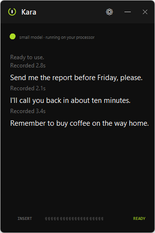
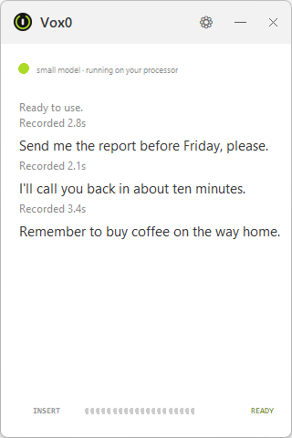

Vox0 · free offline dictation for Windows
Hold a key and speak. Your words appear in the app you're using. A free, open source alternative to Wispr Flow, with transcription running 100% locally on your PC. Download the speech model once, then dictate offline.


No actors, no script -- just Bryan talking to his own PC, an RTX 3070, which is why it's this fast.
The NVIDIA edition includes its CUDA support. No separate NVIDIA runtime download is needed.
Current release: Vox0 0.3.6 · Windows 10 and 11 · nothing else to install
Step by step install guide
· All files and release notes
Automatic language detection is back: switch languages between dictations.
Mixing languages in one recording can cause errors. A fixed language can
improve accuracy, especially on short clips.
How it works
The speech recognition runs on your own computer using Whisper. Your voice is never uploaded. You can pull out the network cable and it still works.
What it looks like
How it compares
Both turn speech into text where you type. Vox0 is for Windows users who want their voice processed entirely on their own PC.
| Feature | Vox0 | Wispr Flow |
|---|---|---|
| Price | Free, no subscription | Free and paid plans |
| Transcription | On your PC, using Whisper | In the cloud |
| Works offline | Yes, after downloading the model | No, internet required |
| Dictation into apps | Yes | Yes |
| Platforms | Windows 10 and 11 | Mac, Windows, iOS and Android |
| Text processing | Transcription, punctuation and number formatting | AI cleanup and rewriting |
Vox0 focuses on local dictation. Flow also offers AI rewriting and
cross-device features. Compare those features with your needs.
Sources: Wispr Flow features,
cloud transcription and internet requirement,
plans.
Checked .
Questions
Yes. The first run downloads the speech model, about 460 MB. After that it never needs the internet again, and your voice is processed entirely on your own machine.
Yes, and it is open source under the MIT license. No account, no subscription, no paid tier, no trial that runs out.
Yes, for dictating text into Windows apps. Vox0 runs Whisper entirely on your PC and works offline after a one-time speech model download. Wispr Flow transcribes in the cloud and needs an internet connection. Vox0 focuses on dictation, punctuation and number formatting; it does not offer Flow's AI rewriting or cross-device features.
Windows Voice Typing needs an internet connection. Vox0 runs Whisper on your own PC and works offline after downloading the speech model. You can choose the model according to your hardware and accuracy needs.
Spanish, English, Portuguese, French, German and Italian. Automatic mode detects the language for each dictation. You can also choose a fixed language to improve accuracy on short clips. Mixing languages in one recording can cause errors.
No. The CPU edition runs on your processor. If you have a compatible NVIDIA card and a current driver, install the NVIDIA GPU edition for faster transcription.
No. Nothing leaves your computer. The microphone is only open while you hold the key, so nothing is listening the rest of the time.
Insert by default, and you can change it to any key or an extra mouse button. Avoid normal letters: the key is not blocked, so choosing q would start a recording every time you typed one.